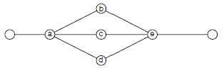
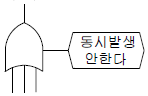
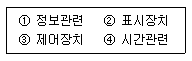
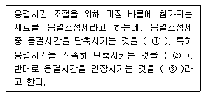

건설안전산업기사 (2005-09-04 기출문제)
1과목: 산업안전관리론
1. 재해를 분석하는 방법 중 재해건수가 비교적 적은 사업장의 적용에 적합하고 특수재해나 중대재해의 분석에 사용하는 방법은?
- 개별분석
- 통계분석
- 크로스(Cross)분석
- 직접분석
(정답률: 58%)

2. 무재해 운동의 3요소가 아닌 것은?
- 이념 : 최고 경영자의 경영자세
- 상황 : 재해 상황의 파악
- 실천 : 관리 감독자에 의한 안전 보건의 추진
- 기법 : 직장 소집단의 자주활동의 활성화
(정답률: 61%)
3. 다음은 리더십에 있어서의 권한의 역할이다. 이들 중 지도자 자신이 자신에게 부여한 권한은?
- 보상적 권한
- 강압적 권한
- 합법적 권한
- 전문성의 권한
(정답률: 60%)
4. 기차역의 열차에서 보이는 현상으로 열차가 정지하고 있어도 기차역이 움직이는 것 같이 보이는 것은 다음 중 어디에 해당되는가?
- 가상운동
- 유도운동
- 자동운동
- 지각운동
(정답률: 79%)
5. 다음 중 TWI 교육과정과 연관성이 없는 것은?
- 작업지도 훈련
- 인간관계 훈련
- 정책수립 훈련
- 작업방법 훈련
(정답률: 70%)
6. 피로에 영향을 주는 기계측의 인자가 아닌 것은?
- 기계의 색
- 기계의 중량
- 기계의 이해 용이
- 조작부분의 감촉
(정답률: 19%)
7. 안전모의 종류(기호) 중 사용 구분에서 물체의 낙하 또는 비래 및 추락에 의한 위험을 방지 또는 경감하고, 머리 부위 감전에 의한 위험을 방지하기 위한 것은?
- A
- AB
- AE
- ABE
(정답률: 65%)
8. 안전교육 중 CCS(Civil Communication Section)이라고도 하며, 당초에는 일부 회사의 톱 매니지먼트에 대해서만 행하여졌던 것이 널리 보급된 것은?
- TWI(Training Within Industry)
- MTP(Management Training Program)
- ATP(Adminstration Training Program)
- ATT(American Telephone & Telegram)
(정답률: 47%)
9. 결함제조물에서 신체적 부상이나 재산상의 손해를 입었을 경우에 제조업자가 그 손해에 대한 배상의 책임을 져야하는 것을 무엇이라 하는가?
- 제조물 책임(P.L)
- 형사 책임
- 물적 책임
- 행위적 책임
(정답률: 61%)
10. 안전교육의 종류 3가지를 포함되지 않는 것은?
- 태도육성교육
- 지식교육
- 직무교육
- 기능교육
(정답률: 58%)
11. 재해조사의 순서 중 제1단계(사실의 확인)에서 조사항목으로 맞는 것은?
- 작업 중 관리에 관한 사항
- 사내의 제기준의 문제점 확인
- 기본원인과 근본적 문제의 결정
- 근본문제점을 중심으로 동종재해 예방대책 수립
(정답률: 35%)
12. 다음은 보호구를 선택할 때 주의사항에 관한 설명이다. 틀린 것은?
- 귀마개 : 피부에 유해한 영향을 주지 않는 것일 것
- 안전모 : 내전, 내수, 내충격에 강한 것일 것
- 보안경 : 상해 등을 주는 각이나 凸이 없고 불쾌감이 없을 것
- 방진 마스크 : 흡배기 저항이 높은 것일 것
(정답률: 69%)
13. 다음 중 피로도 검사 기법은?
- 바이오리듬법(Biorhythm Test)
- 플리커법(Flicker Test)
- TLV(Threshold Limit Value)
- RMR(Relative Metabolic Rate)
(정답률: 27%)
14. 자기의 잠재능력을 극대화하려고 하는 욕구는 다음 중 어느 것에 해당되는가?
- 자아실현의 욕구
- 사회적 욕구
- 존경의 욕구
- 안전의 욕구
(정답률: 94%)
15. 인간의 욕구를 5단계로 나누고 위계이론을 발표한 사람은 다음 중 누구인가?
- 데이비스
- 하인리히
- 맥그리거
- 매슬로우
(정답률: 87%)
16. 재해원인의 직접 원인 중 불안전행동이 아닌 것은?
- 정리정돈의 불량
- 위험장소의 출입
- 운전중인 기계장치의 손질
- 물의 배치 및 작업장소 결함
(정답률: 53%)
17. 인간이 기계설비와 안전을 공존하면서 근로할 수 있는 시스템의 기본조건 4개의 M이 아닌 것은?
- Material
- Machine
- Media
- Management
(정답률: 63%)
18. 산업안전 색채 중 잠재한 위험을 일깨워 주거나 불안한 행위에 주의를 환기시킬 위치에 설치하는 경고표지의 50% 이상을 차지하는 색은 다음 중 어느 것인가?
- 빨강
- 노랑
- 녹색
- 파랑
(정답률: 34%)
19. 차광안경의 커버렌즈와 커버플레이트는 가시광선을 잘 투과시켜야 한다. 이 때 시감 투과율이 얼마라야 하는가?
- 85% 미만
- 85% 이상
- 89% 미만
- 89% 이상
(정답률: 38%)
20. 하인리히의 사고예방대책 5단계 중에서 단계별 내용이 잘못 짝지어진 것은?
- 제1단계 : 안전조직
- 제2단계 : 사실의 발견
- 제3단계 : 분석
- 제4단계 : 3E의 적용
(정답률: 36%)
2과목: 인간공학 및 시스템안전공학
21. 근골격계 질환 예방을 위한 유해요인 수시조사를 해야 할 경우가 아닌 것은?
- 근골격계 질환자 발생시
- 작업자 변경시
- 새로운 설비의 도입
- 작업환경의 변경
(정답률: 48%)
22. 음(音)의 크기의 단위를 나타낸 것은?
- 데시벨(dB), 룩스(lux)
- 폰(Phon), 파운드(lb)
- 폰(Phon), 데시벨(dB)
- 데시벨(dB), 피에스아이(PSI)
(정답률: 75%)
23. 각각 10000시간의 수명을 가진 A, B 두요소가 병렬계를 이룰 때 시스템의 수명(요소 A, B의 수명은 지수분포를 따름)은?
- 5000시간
- 10000시간
- 15000시간
- 20000시간
(정답률: 44%)
24. 기능적으로 분류한 전형적인 안정성 설계기준과 거리가 먼 것은?
- 공장건설 단계
- 기계시스템
- 화기 또는 폭약시스템
- 수송설비
(정답률: 42%)
25. 작업자의 요구나 관심이 한 가지에 집중되는 의식우회의 문제를 지닌 작업자에 대한 감독자의 적절한 조치는?
- 규제
- 통제
- 카운슬링
- 처벌
(정답률: 65%)
26. 다음의 경우 시스템의 신뢰도는 얼마인가? (단, a, b의 신뢰도는 0.9, c, d, e의 신뢰도는 0.8이다.)

- 0.55
- 0.64
- 0.72
- 0.88
(정답률: 40%)
27. 추위압박(Cold Stress)에 관한 설명 중 올바른 것은?
- 생존한계는 피부온도 섭씨 28도이다.
- 생존한계는 피부온도 섭씨 0도이다.
- 추적작업이 가장 큰 영향을 받는다.
- 더위압박보다 덜 위험하다.
(정답률: 44%)
28. 정보의 측정단위인 Bit를 옳게 설명한 것은?
- 실현가능성이 같은 2개의 대안 중 하나가 명시되었을때 얻는 정보량
- 실현가능성이 같은 4개의 대안 중 하나가 명시되었을때 얻는 정보량
- 실현가능성이 같은 8개의 대안 중 하나가 명시되었을때 얻는 정보량
- 실현가능성이 같은 16개의 대안 중 하나가 명시되었을때 얻는 정보량
(정답률: 48%)
29. 시스템 안전 기법이 아닌 것은?
- DYNAMO
- ETA
- FMEA
- THERP
(정답률: 65%)
30. 결함수상 그림의 기호는?

- OR게이트
- 배타적 OR게이트
- 조합 OR게이트
- 우선적 OR게이트
(정답률: 40%)
31. 다음 중 작업장의 조명 수준에 대한 설명으로 맞는 것은?
- 작업영역에 따라 휘도의 차이를 크게 한다.
- 천장은 80% 이상의 반사율을 가지게 한다.
- 실내표면의 반사율은 천장에서 바닥의 순으로 증가시킨다.
- 작업환경의 추천 휘도비는 5 : 1이다.
(정답률: 65%)
32. 설비열화형 기계설비를 전체적으로 대수리, 점검하는 것을 무엇이라 하는가?
- 오버홀(Overhaul)
- 월례점검
- 일상점검
- 정기검사
(정답률: 22%)
33. 조종 장치에서 어떤 것을 켤 때 기대되는 운동방향이 아닌 것은?
- 스위치를 위로 올린다.
- 버튼을 우측으로 민다.
- 조종 장치를 앞으로 민다.
- 조종 장치를 반시계 방향으로 돌린다.
(정답률: 63%)
34. 시간과 동작연구(Time And Motion Study)가 영향을 끼친 것은?
- 참여적 경영
- 선발방법의 개선
- 분업 및 작업의 자동화
- 리더십 개발
(정답률: 75%)
35. 3개의 부품이 OR gate에 연결된 FTA 모델이 있다. 각부품의 고장확률은 0.2이다.“시스템의 작동 안 됨”을 정상사상(Top Event)으로 했을 때 정상사상이 발생할 확률은 얼마인가?
- 0.008
- 0.488
- 0.512
- 0.992
(정답률: 44%)
36. 인간-기계 통합체계의 형태에 해당되지 않는 것은?
- 수동
- 자동
- 감지
- 기계화
(정답률: 63%)
37. 인간-기계 시스템(Man-Machine System)에서 조작상 인간에러발생 빈도수의 순서로 맞는 것은?

- ① - ② - ③ - ④
- ① - ② - ④ - ③
- ① - ④ - ③ - ②
- ② - ① - ③ - ④
(정답률: 19%)
38. 공장설비의 고장원인 분석 방법으로 적당하지 못한 것은?
- 고장원인 분석은 언제, 누가, 어떻게 행하는 가를 그때의 상황에 따라 결정한다.
- P-Q분석도에 의한 고장대책으로 빈도가 많은 고장에 대하여 근본적인 대책을 수립한다.
- 동일기종이 다수 설치되었을 때는 공통된 고장 개소, 원인 등을 구명하여 개선하고 자료를 작성한다.
- 발생한 고장에 대해 원인, 수리상의 문제점, 생산에 미치는 영향을 조사하고 재발 방지계획을 수립한다.
(정답률: 30%)
39. 인터페이스(계면)를 설계할 때 감성적인 부문을 고려하지 않으면 나타나는 결과는 무언인가?
- 육체적 압박
- 정신적 압박
- 진부감(陳腐感)
- 편리감
(정답률: 75%)
40. 인간 에러(Hunman Error)를 예방하기 위한 기법 중 적당하지 않은 방법은?
- 작업상황 개선
- 인간실수 자료 은행
- 요원변경
- 시스템의 영향 감소
(정답률: 22%)
3과목: 건설시공학
41. 철골 구조는 일반적으로 부재를 접합하여 뼈대를 구성하는 가구식 구조로 분류되며 공장에서 제작한 부재를 현장으로 운반해서 조립하여 접합함으로써 건축물의 구조가 완성된다. 이때 접합부의 유의사항으로 잘못된 것은?
- 접합부의 위치는 역학적으로 응력이 가능한 한 큰 곳에서 해야 한다.
- 구조상 주요한 부재의 접합부에는 존재응력이 작더라도 고장력 볼트접합의 경우 최소 2개 이상 배치한다.
- 부재 중심축과 접합의 중심축을 일치시키며, 일치되지 않을 때는 편심에 대한 영향을 고려한다.
- 축방향력을 받는 부재는 각 재의 중심축이 1점에 모이도록 한다.
(정답률: 58%)
42. 콘크리트 부어넣기에 앞서 거푸집에 물뿌리기를 하는 가장 큰 이유는?
- 거푸집이 콘크리트의 수분흡수를 방지하기 위하여
- 거푸집 내부의 불순물을 청소하기 위하여
- 거푸집의 휨을 방지하기 위하여
- 콘크리트 경화완결 후에 거푸집 철거를 용이하게 하기 위하여
(정답률: 58%)
43. 거푸집공법 중 수평적 또는 수직적으로 반복된 구조물을 시공이음이 없이 균일한 형상으로 시공하기 위하여 거푸집을 연속적으로 이동시키면서 콘크리트를 타설하여 시공하는 공법으로 주로 사일로(Silo), 전단벽 건물, 유틸리티코어 등에 사용되는 거푸집은?
- 슬립폼(Slip Form)
- 갱폼(Gang Form)
- 트래블링폼(Traveling Form)
- 플라잉폼(Flying Form)
(정답률: 60%)
44. 지상에서 구조체를 미리 축조하여 침하시켜 만드는 기초공법은?
- 독립기초
- 온통기초
- 우물통기초
- 잠함기초
(정답률: 60%)
45. 토질시험 중 흙의 강도 및 변형계수를 결정하는 시험으로 고무막에 넣은 원통형의 시료에 일정한 측압을 가하면서 수직하중을 가하여 파괴시키는 시험은 어느 것인가?
- 투수시험
- 삼축압축시험
- 전단시험
- 다지기시험
(정답률: 55%)
46. 철골 세우기용 장비 중 수평이동이 용이하고 건물의 층수가 적은 긴 평면일 때 또는 당김줄을 마음대로 맬수 없을 때 가장 유리한 장비는?
- 스티프레그데릭
- 진폴
- 가이데릭
- 트럭크레인
(정답률: 49%)
47. 철골보의 처짐을 적게 하는데 다음 기술 중 가장 적절한 것은?
- 부재의 단면 2차 모멘트(I)값을 크게 한다.
- SM, TMCP 강을 적용한다.
- 하부 플랜지(Flange)를 상부 플랜지보다 크게 한다.
- 웨브(Web) 단면적을 크게 한다.
(정답률: 16%)
48. 1956년 미국의 듀퐁사가 신규설비 및 투자자금의 효율적 사용을 위해 개발한 공정관리 기법은?
- PERT기법
- CPM기법
- Lob기법
- 바챠트기법
(정답률: 57%)
49. 건설공사 원가 구성체계에 관한 설명 중 직접공사비에 포함되지 않는 것은?
- 자재비
- 일반관리비
- 외주비
- 노무비
(정답률: 74%)
50. 주문받은 건설업자가 대상계획의 기업, 금융, 토지조달, 설계, 시공 기타 모든 요소를 포괄한 도급계약방식은?
- 실비정산 보수가산도급
- 정액도급
- 공동도급
- 턴키(Turn-Key)도급
(정답률: 70%)
51. 토공사용 건설기계로서 지반보다 낮은 곳의 도랑파기식 굴착에 가장 적당한 것은?
- 백호우
- 로더
- 파워셔블
- 클램셸
(정답률: 62%)
52. 콘크리트공사에서 비교적 간단한 구조의 합판거푸집을 적용할 때 사용되며 측압력을 부담하지 않고 단지 거푸집의 간격만 유지시켜 주는 역할을 하는 것은?
- 컬럼밴드
- 플랫타이
- 폼타이
- 세퍼레이터
(정답률: 75%)
53. 오픈 컷(Open Cut) 공법 중 경사면 오픈 컷 공법과 관련이 없는 것은?
- 경사면 보호
- 흙의 휴식각 이용
- 버팀대 사용
- 지하수 처리
(정답률: 25%)
54. 포졸란(Pozzolan)을 사용한 콘크리트의 특징으로 옳지 않은 것은?
- 블리딩 및 재료분리가 감소된다.
- 강도 증진이 늦어지므로 장기 강도가 낮아진다.
- 해수 등에 화학적 저항성이 크다.
- 수밀성이 크다.
(정답률: 84%)
55. 기초공사를 하기 위하여 땅을 파는 일을 기초파기 또는 흙파기라 하는데, 흙파기 모양에 따라 구분한 용어가 아닌 것은?
- 구덩이파기(Pit Excavation)
- 줄기초파기(Trenching)
- 온통기초파기(Overall Excavation)
- 탑다운 공법(Top-down Method)
(정답률: 64%)
56. 콘크리트 혼화제 중 AE제에 대한 설명으로 틀린 것은?
- 표면이 매끈하여 제물치장에 효과적이다.
- 강재와의 부착력이 약간 증가한다.
- 동해(凍害)저항이 증가한다.
- 시공연도가 향상된다.
(정답률: 46%)
57. 철골공사에서 홈을 파기 위한 목적으로 한 화구(火口)로 서 산소아세틸렌 불꽃을 이용하여 녹여 깎은 재료의 뒷부분 을 깨끗이 깎는 것의 명칭은?
- 가스 가우징(Gas Gouging)
- 크레이터(Crater)
- 플럭스(Flux)
- 위빙(Weaving)
(정답률: 48%)
58. 흙막이 공사에 사용되는 어스앵커(Earth Anchor)의 세부 구조 내용이 아닌 것은?
- 자유장
- 정착장
- 압축재
- 인장재
(정답률: 34%)
59. 형강 또는 판 등의 겹침이음, T자 이음, 각이음 등에 쓰이며, 철판과 철판이 겹치든가 맞닿는 부분의 각을 이루는 부분을 용접하는 방식의 명칭은?
- 모살용접
- 맞댐용접
- 플레이용접
- 플래그용접
(정답률: 58%)
60. 경량콘크리트 시공상의 주의사항과 거리가 먼 것은?
- 철근의 이음길이를 보통콘크리트에 비하여 길게 하여야 한다.
- 경량골재는 배합하기 전에 완전히 건조시켜야 한다.
- 보와 바닥판의 콘크리트는 벽이나 기둥의 콘크리트가 충분히 안정된 후에 부어 넣어야 한다.
- 직접 흙 또는 물에 항상 접하는 부분에는 경량콘크리트의 시공을 금해야 한다.
(정답률: 75%)
4과목: 건설재료학
61. 플라스틱재료의 일반적인 성질에 대해 설명 중 옳은 것은?
- 산이나 알칼리, 염류 등에 대한 저항성이 강재보다 약하다.
- 전기저항성이 불량하여 절연재료로 사용할 수 없다.
- 폴리초산비닐 등 일부를 제외하고 내수성 및 내투습성은 극히 좋지 않다.
- 상호간 계면 접착이 잘되며 금속, 콘크리트, 목재, 유리 등 다른 재료에도 잘 부착된다.
(정답률: 60%)
62. 보통포틀랜드 시멘트의 품질규정에서 응결 시작시간과 종결시간으로 옳은 것은?
- 30분 ~ 6시간
- 1시간 ~ 6시간
- 1시간 ~ 10시간
- 2시간 ~ 10시간
(정답률: 37%)
63. 다음 목재의 함수율 중 압축강도가 가장 높은 것은?
- 10%
- 15%
- 20%
- 30%
(정답률: 29%)
64. 시멘트의 물을 가하여 혼합하여 만들어진 시멘트 페이스트가 시간경과에 따라 유동성을 잃고 응고하는 현상을 무엇이라 하는가?
- 응결
- 수화
- 건조수축
- 위결
(정답률: 60%)
65. 콘크리트구조물의 크리프(Creep) 현상에 대한 설명 중 옳지 않은 것은?
- 작용응력이 클수록 크리프는 크다.
- 물시멘트비가 클수록 크리프는 크다.
- 재하시 재령이 빠를수록 크리프는 크다.
- 재하중의 건조 진행과 구조부재의 치수는 크리프와 관계가 없다.
(정답률: 61%)
66. 다음 중 음(音)의 조절판으로서 부적당한 것은?
- 연질 섬유판
- 코펜하겐 리브
- 코르크 보드
- 파키트리 보드
(정답률: 30%)
67. 다음 중 ( )안에 들어갈 말로 알맞은 것은?

- ① 촉진제, ② 지연제, ③ 급결제
- ① 지연제, ② 급결제, ③ 촉진제
- ① 촉진제, ② 급결제, ③ 지연제
- ① 급결제, ② 지연제, ③ 촉진제
(정답률: 70%)
68. 철근의 부식 및 방식에 대한 설명 중 옳지 않은 것은?
- 철강의 표면은 대기 중의 습기나 탄산가스와 반응하여 녹을 발생시킨다.
- 철강은 물과 공기에 번갈아 접촉시키면 부식되기 쉽다.
- 방식법에는 철강의 표면을 Zn, Sn, Ni 등과 같은 내식성이 강한 금속으로 도금하는 방법이 있다.
- 일반적으로 산에는 부식되지 않으나 알칼리에는 부식된다.
(정답률: 75%)
69. 점토제품에 관한 설명 중 틀린 것은?
- 자기질 타일은 내장타일, 외장타일, 바닥타일, 모자이크타일에 적용된다.
- 테라코타는 주로 장식용으로 사용되며 난간벽, 돌림대, 창대, 주두 등에 사용된다.
- 벽돌색이 적색 또는 적갈색을 띠는 것은 원료점토에 포함되어 있는 산화철에서 기인한다.
- 포도벽돌이란 저급점토, 목탄가루, 톱밥 등으로 혼합, 성형한 후 소성한 것으로 점토벽돌 보다 가벼운 벽돌을 말한다.
(정답률: 43%)
70. 다음의 미장재료에 대한 설명 중 틀린 것은?
- 석고플라스터는 가열하면 결정수를 방출하여 온도 상승을 억제하기 때문에 내화성이 있다.
- 바라이트 모르타르는 방사선 방호용으로 사용된다.
- 돌로마이트플라스터는 수축률이 크고 균열이 쉽게 생긴다.
- 혼합석고플라스터는 약산성이며 석고라스보드에 적합하다.
(정답률: 33%)
71. 석회석이 변화되어 결정화한 것으로 석질이 치밀하고 견고할 뿐 아니라 외관이 미려하여 실내장식재 또는 조각재로 사용되는 석재는?
- 화강암
- 안산암
- 응회암
- 대리석
(정답률: 50%)
72. 포틀랜드시멘트 클링커에 철용광으로부터 나온 슬래그를 급랭한 급랭슬래그를 혼합하여 이에 응결시간 조정용 석고를 분쇄한 것으로 수화열량이 적어 매스콘크리트용으로부터 사용이 가능한 시멘트는?
- 알루미나시멘트
- 중용열 포틀랜드시멘트
- 고로시멘트
- 백색 포틀랜드시멘트
(정답률: 45%)
73. 다음 중 구리(Cu)와 주석(Sn)을 주체로 한 합금으로 주조성이 우수하고 내식성이 크며 건축 장식철물 또는 미술공예재료에 사용되는 것은?
- 청동
- 황동
- 양백
- 두랄루민
(정답률: 93%)
74. 콘크리트 슬럼프시험(Slump Test)에 관한 설명 중 옳지 않은 것은?
- 컨시스턴시를 측정하는 방법으로 사용된다.
- 시험통의 치수는 윗지름 10cm, 아래지름 20cm, 높이 30cm이다.
- 콘크리트를 시험통에 한번에 넣고 충분히 다진다.
- 슬럼프값이 클수록 연도가 좋은 콘크리트이다.
(정답률: 57%)
75. 목재의 일반적인 성격에 대한 설명 중 옳지 않은 것은?
- 열전도율이 적으므로 보온, 방한, 방서성이 좋다.
- 가공성이 좋으며 음의 흡수, 차단성이 크다.
- 부패하기 쉽고 충해를 받기 쉽다.
- 흡수성이 적어 건습에 의한 신축변형이 거의 없다.
(정답률: 67%)
76. 콘크리트용 골재로서 요구되는 골재의 성질이 아닌 것은?
- 콘크리트강도를 확보하는 강성(세기)을 지닐 것
- 입도는 조립에서 세립까지 연속적으로 균등히 혼합되어 있을 것
- 골재의 입형은 편평, 세장할 것
- 잔골재는 유기불순물시험에 합격한 것
(정답률: 69%)
77. 다음 합성수지 중 열경화성 수지는?
- 염화비닐수지
- 폴리에틸렌수지
- 아크릴수지
- 폐놀수지
(정답률: 50%)
78. 다음 중 석재의 사용 용도로 가장 적당하지 않은 것은?
- 사문암 - 실내장식재
- 대리석 - 테라조용 종석
- 안산암 - 구조재
- 점판암 - 콘크리트용 골재
(정답률: 64%)
79. 단위질량의 물질을 온도 1℃ 올리는 데 필요한 열량(cal/g℃)을 무엇이라 하는가?
- 비열
- 열전도율
- 열용량
- 열관류율
(정답률: 41%)
80. 다음 중 지하방수나 아스팔트 펠트 삼투용(滲透用)으로 쓰이는 것은?
- 스트레이트 아스팔트
- 블론 아스팔트
- 아스팔트 컴파운드
- 콜타르
(정답률: 42%)
5과목: 건설안전기술
81. 현장에서 비계설치시 높이가 몇 미터 이상인 작업장소에는 작업하중을 견딜 수 있는 견고한 작업발판을 설치하여야 하는가?
- 2m
- 3m
- 5m
- 10m
(정답률: 77%)
82. 차량계 건설기계의 운전자가 운전위치를 이탈할 때 행하여야 할 조치사항이 아닌 것은?
- 브레이크를 걸어둔다.
- 버킷은 지상에서 1m 정도의 위치에 둔다.
- 디퍼는 지면에 내려둔다.
- 원동기를 정지시킨다.
(정답률: 73%)
83. 강관을 사용하여 비계를 구성하는 때에 준수사항으로 옳지 않은 것은?
- 비계기둥의 간격은 띠장 방향에서 1.5m ~ 1.8m, 장선방향에서는 1.5m 이하로 할 것
- 지상 첫 번째 띠장은 3m 이하 기타는 1.5m 이내 마다의 위치에 설치할 것
- 비계기둥으 최고로부터 31m 되는 지점 밑 부분의 비계기둥은 2본의 강관으로 묶어 세울 것
- 비계기둥의 적재하중은 400kg을 초과하지 아니하도록할 것
(정답률: 50%)
84. 건물내부의 쓰레기를 청소하여 외부로 반출하기 위해투하설비를 설치하고자 한다. 높이가 몇 미터 이상인 장소로 부터 물체를 투하하는 때에 투하설비를 설치하여야 하는가?
- 2m
- 3m
- 5m
- 10m
(정답률: 43%)
85. 콘크리트 타설 후 물이나 미세한 불순물이 분리 상승하여 콘크리트 표면에 떠오르는 현상을 가리키는 용어와 이때 표면에 발생하는 미세한 물질을 가리키는 용어를 알맞게 나열한 것은?
- 블리딩 - 레이턴스
- 보링 - 샌드드레인
- 히빙 - 슬라임
- 블로홀 - 슬래그
(정답률: 35%)
86. 철골작업을 실시할 때 작업을 중지하여야 하는 악천 후의 기준이 아닌 것은?
- 풍속이 10m/s 이상인 경우
- 지진이 진도 3 이상인 경우
- 강우량이 1mm/h 이상인 경우
- 강설량이 1cm/h 이상인 경우
(정답률: 60%)
87. “현장에서 지게차, 구내운반차, 화물자동차 등의 차량계하역운반기계 및 고소(高所)작업대를 사용하여 작업을 하는때에는 작업계획을 작성하고 작업 지휘자를 지정하고 작업계획에 따라 작업을 실시하도록 하여야 하는데, 고소작업대의 경우는 ( )미터 이상의 높이에서 운용하는 것에 한한다.”( ) 안에 알맞은 높이는?
- 5
- 10
- 15
- 20
(정답률: 39%)
88. 안전관리비의 항목으로 사용할 수 없는 것은?
- 전담 안전관리자 인건비
- 기성품에 부착된 안전장치 비용
- 안전관리자 전용 무전기
- 사내 자체 안전보건교육
(정답률: 20%)
89. 가설통로를 설치하는 때에 준수하여야 할 기준으로 옳지 않은 것은?
- 건설공사에 사용하는 높이 15m 이상인 비계다리에는 10m 이내마다 계단참을 설치한다.
- 경사는 30도 이하로 한다.
- 추락의 위험이 있는 곳에는 안전난간을 설치한다.
- 경사가 15도를 초과할 때에는 미끄러지지 않는 구조로 하여야 한다.
(정답률: 22%)
90. 지게차의 작업 시작 전 점검사항으로 옳지 않은 것은?
- 제동장치 및 조종장치 기능의 이상 유무
- 하역장치 및 유압장치 기능의 이상 유무
- 버팀의 방법 및 고정상태의 이상 유무
- 전조등, 후미등, 방향지시기 및 경보장치기능의 이상 유무
(정답률: 50%)
91. 옹벽의 안정기준에서 활동에 대하여 안전하기 위하여 활동에 대한 저항력이 수평력보다 최소 몇 배 이상 되어야 하는가?
- 1.0배
- 1.5배
- 2.0배
- 3.0배
(정답률: 66%)
92. 압쇄기를 지상에 설치한 압쇄단독공법의 건물 파쇄작업 순서로 옳은 것은?
- 슬래브 - 기둥 - 보 - 벽체
- 기둥 - 슬래브 - 보 - 벽체
- 기둥 - 보 - 벽체 - 슬래브
- 슬래브 - 보 - 벽체 - 기둥
(정답률: 32%)
93. 이동식 크레인에 부득이하게 탑승설비를 설치할 때에는 추락 방지를 위해 탑승설비와 탑승자의 총중량의 1.3배에 상당하는 중량에 얼마의 중량을 가산한 수치가 이동식 크레인의 정격하중을 초과하지 아니하도록 하여야 하는가?
- 200kg
- 300kg
- 500kg
- 1000kg
(정답률: 40%)
94. 통나무 비계를 사용할 수 있는 공사규모로 옳은 것은?
- 지상높이 5층 이하 또는 12m 이하인 건축물 공작물의 건조, 해체 및 조립작업시
- 지상높이 4층 이하 또는 15m 이하인 건축물 공작물의 건조, 해체 및 조립작업시
- 지상높이 5층 이하 또는 15m 이하인 건축물 공작물의 건조, 해체 및 조립작업시
- 지상높이 4층 이하 또는 12m 이하인 건축물 공작물의 건조, 해체 및 조립작업시
(정답률: 23%)
95. 특별고압 활선작업시 충전전로의 사용전압에 대한 접근 한계거리가 옳은 것은? (순서대로 사용전압 : 한계거리)
- 0.3kV 초과 0.75kV 이하 : 25cm
- 0.75kV 초과 2kV 이하 : 45cm
- 2kV 초과 15kV 이하 : 65cm
- 5kV 초과 37kV 이하 : 85cm
(정답률: 48%)
96. 건설공사 유해 위험 방지계획서 제출시 공통적으로 제출하여야 할 첨부서류가 아닌 것은?
- 공사개요서
- 산업안전보건관리계획서
- 감전재해예방계획서
- 가설도로계획서
(정답률: 52%)
97. 감전재해의 방지대책을 직접접촉에 대한 방지와 간접접촉에 대한 방지로 구분할 때 직접접촉에 대한 방지 대책으로 옳은 것은?
- 보호절연
- 보호접지(기기외함의 접지)
- 방호망 또는 절연덮개 설치
- 안전전압 이하의 전기기기 사용
(정답률: 55%)
98. 노천굴착작업을 실시하기 전에 조사하여야 할 사항 중 지하 매설물에 해당하지 않는 것은?
- 상하수도관
- 가스, 송유관
- 지층, 토질
- 전기, 전화, 전선케이블
(정답률: 39%)
99. 양중 장비에 대한 다음 설명 중 가장 부적당한 것은?
- 승용승강기란 사람의 수직 수송을 주목적으로 한다.
- 화물승강기는 화물의 수송을 주목적으로 하며 사람의 탑승은 원칙적으로 금지된다.
- 리프트는 동력을 이용하여 화물을 운반하는 기계설비로서 사람의 탑승은 금지된다.
- 크레인은 중량물을 상하 및 좌우 운반하는 기계로서 사람의 운반은 금지된다.
(정답률: 69%)
100. 꽂음 접속기의 설치 사용시 준수사항으로 옳지 않은 것은?
- 해당 꽂음 접속기에 잠금장치가 있을 때에는 접속 후 잠그고 사용할 것
- 습윤한 장소에서 사용되는 꽂음 접속기는 방수형 등의 적합한 것을 사용할 것
- 근로자가 꽂음 접속기 취급시 땀 등에 의한 젖은 손으로 취급하지 않도록 할 것
- 서로 다른 전압의 꽂음 접속기는 상호 접속된 구조의 것을 사용할 것
(정답률: 37%)